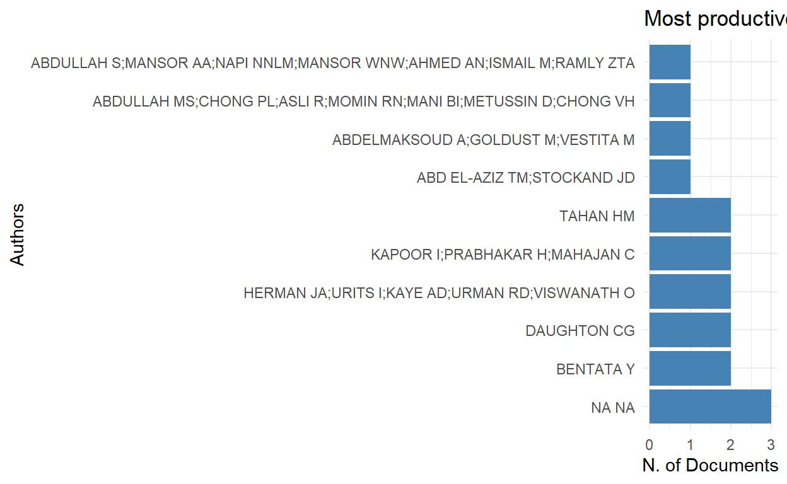
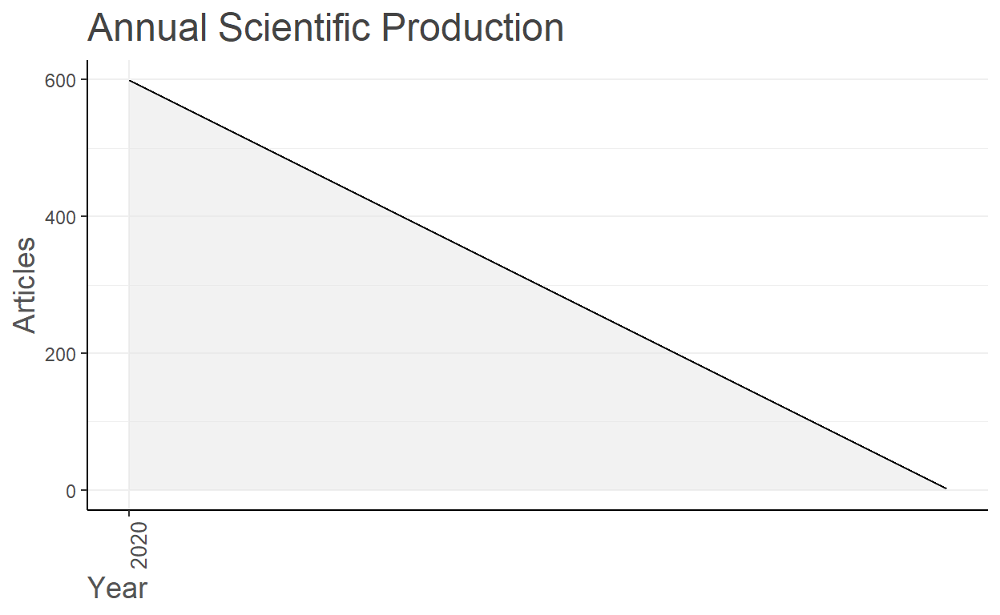
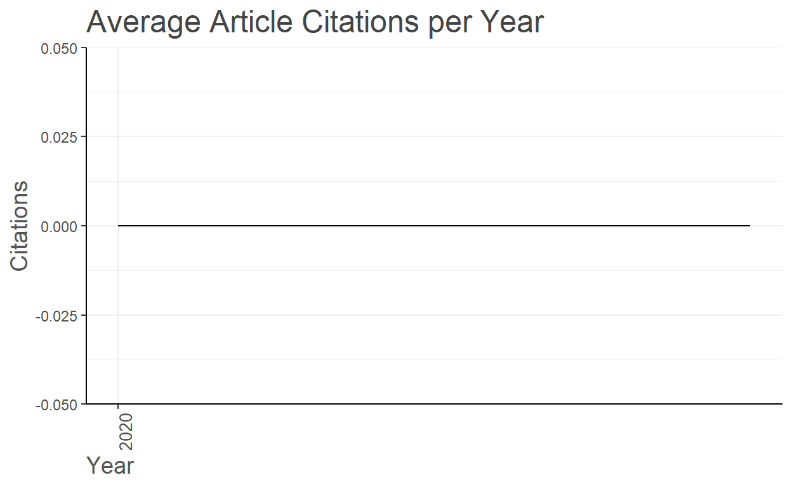
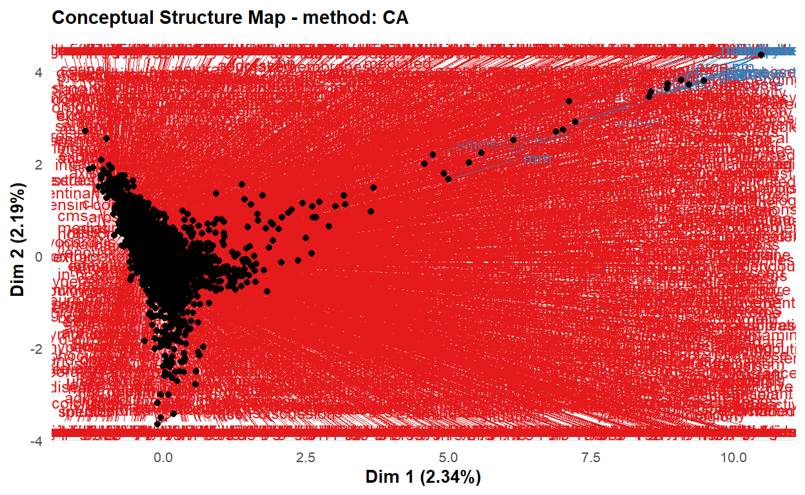
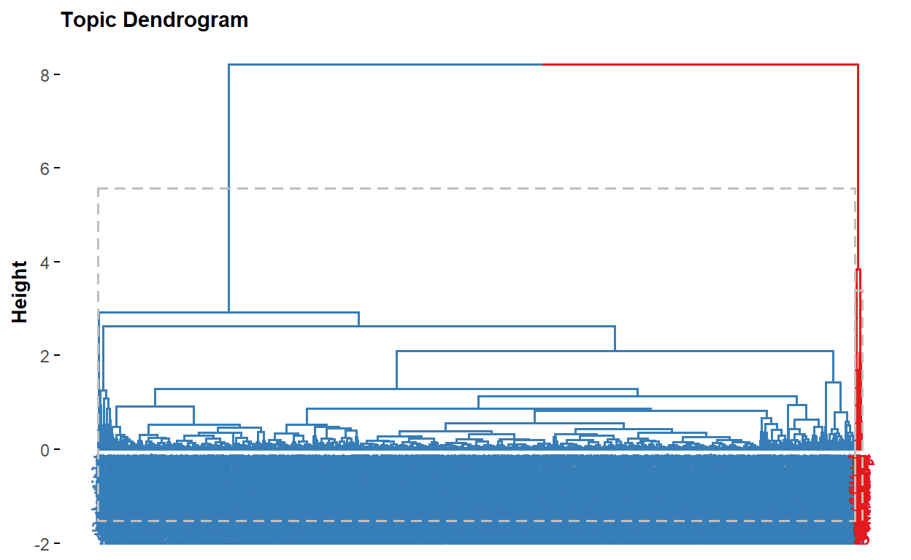
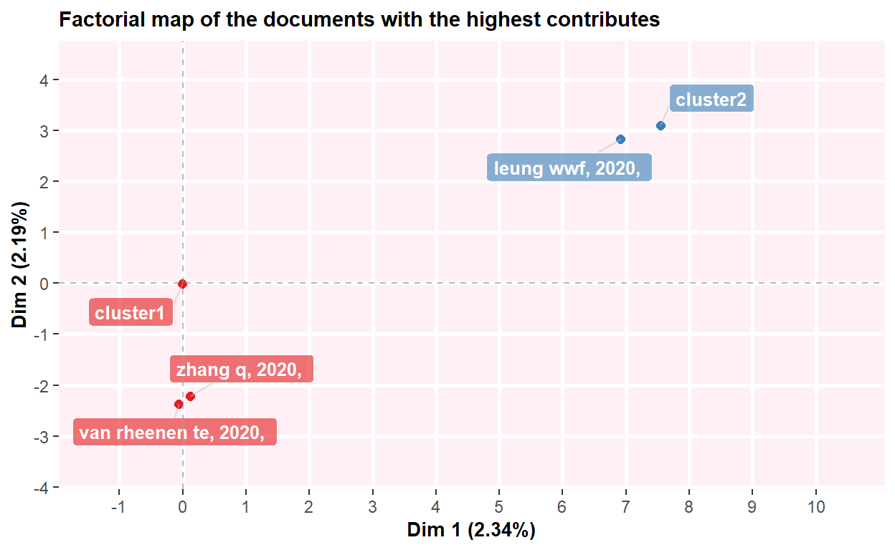
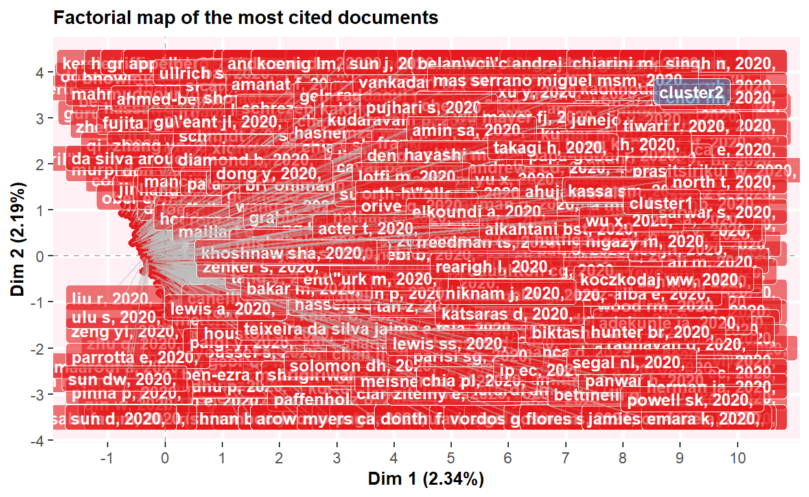
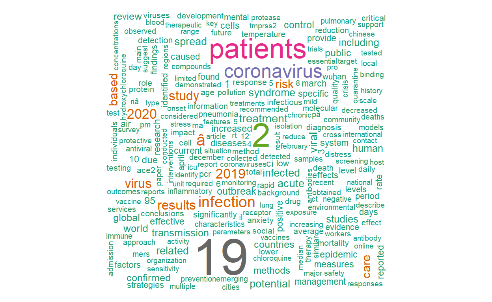
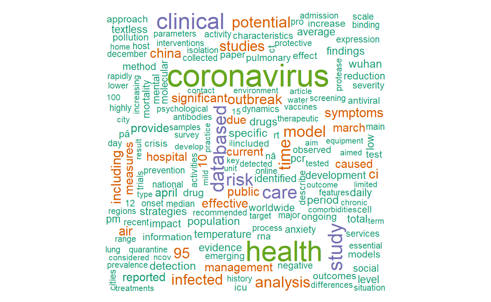

Plan of attack
Source of data
Let’s do a quick PubMed search. Copy the following search terms and search on PubMed. Search terms: (covid 19) AND ((“2020/08/02”[Date - Publication] : “3000”[Date - Publication]))
Alternatively you can find the search link here.
With the above search terms, we can retreive 601 COVID-19 related records that were indexed in PubMed on August 03, 2020.
We can now open these records using our citation manager: EndNote, Mendeley, etc.
Since the file is in RIS format, we must convert it to BibTeX so that we can benefit from Bibliomterix package.
I will come back in the future in another blog post to show you on how to convert RIS file to BibTeX or converting from CSV/XSL reference file to EndNote-readable format. For today, let’s just use the converted COVID19 BibTeX file. We can load convert our BibTex file using either bibliometrix and then bib2df package.
Let’s first use bibliometrix and then bib2df package to convert our COVID19 BibTeX file to data frame.
Initialize
Set working directory
Load necessary packages
library(bibliometrix) #for bibliometric analysis
library(dplyr) #for data management
library(ggplot2) #for plotting
library(tidytext) #for text mining
library(bib2df) #for converting bib file to data frame
library(wordcloud) #for plotting most frequent wordsImport the data to R: Covert the BibTeX file to data frame
covid19_bibanalysis <- convert2df("covid19.bib", dbsource = "isi", format = "bibtex")
Converting your isi collection into a bibliographic dataframe
Warning:
In your file, some mandatory metadata are missing. Bibliometrix functions may not work properly!
Please, take a look at the vignettes:
- 'Data Importing and Converting' (https://cran.r-project.org/web/packages/bibliometrix/vignettes/Data-Importing-and-Converting.html)
- 'A brief introduction to bibliometrix' (https://cran.r-project.org/web/packages/bibliometrix/vignettes/bibliometrix-vignette.html)
Missing fields: ID C1 CRDone!
#As usual, isnpect the data
dim(covid19_bibanalysis) #601 records, 23 variables
[1] 601 23
glimpse(covid19_bibanalysis) #Inspect the structure of data, variable names, etc
Rows: 601
Columns: 23
$ AU <chr> "COCCIA M", "ATAGUBA OA;ATAGUBA JE", "SIGALA ...
$ DE <chr> "AIR POLLUTANTS;AIR POLLUTION;BETACORONAVIRUS...
$ AB <chr> "THIS STUDY HAS TWO GOALS. THE FIRST IS TO EX...
$ BO <chr> NA, NA, NA, NA, NA, NA, "JOURNAL OF BUSINESS ...
$ DI <chr> "10.1016/j.scitotenv.2020.138474", "10.1080/1...
$ institution <chr> NA, NA, NA, NA, NA, NA, NA, NA, NA, NA, NA, N...
$ SN <chr> "1879-1026 (ELECTRONIC)", "1654-9880 (ELECTRO...
$ SO <chr> "THE SCIENCE OF THE TOTAL ENVIRONMENT", "GLOB...
$ LA <chr> "ENG", "ENG", "ENG", "ENG", "ENG", "ENG", "EN...
$ month <chr> "AUG", "DEC", "SEP", "NOV", "SEP", "DEC", "SE...
$ PN <chr> NA, "1", NA, NA, NA, "1", NA, NA, "3", "9", "...
$ PP <chr> "138474", "1788263", "312--321", "106527", "1...
$ pmid <chr> "32498152", "32657669", "32546875", "32679435...
$ TI <chr> "FACTORS DETERMINING THE DIFFUSION OF COVID-1...
$ VL <chr> "729", "13", "117", "110", "83", "9", "117", ...
$ PY <dbl> 2020, 2020, 2020, 2020, 2020, 2020, 2020, 202...
$ DB <chr> "ISI", "ISI", "ISI", "ISI", "ISI", "ISI", "IS...
$ TC <dbl> 0, 0, 0, 0, 0, 0, 0, 0, 0, 0, 0, 0, 0, 0, 0, ...
$ CR <chr> "none", "none", "none", "none", "none", "none...
$ C1 <lgl> NA, NA, NA, NA, NA, NA, NA, NA, NA, NA, NA, N...
$ AU_UN <lgl> NA, NA, NA, NA, NA, NA, NA, NA, NA, NA, NA, N...
$ SR_FULL <chr> "COCCIA M, 2020, ", "ATAGUBA OA, 2020, ", "SI...
$ SR <chr> "COCCIA M, 2020, ", "ATAGUBA OA, 2020, ", "SI...Now bibliometrics analysis
results <- biblioAnalysis(covid19_bibanalysis, sep = ",") #create the object
options(width=100) #to determine width of the plot
s <- summary(object=results, k=10, pase=FALSE) #to present 10 most prominent authors, journals, keywords, etc
MAIN INFORMATION ABOUT DATA
Timespan 2020 : 2021
Sources (Journals, Books, etc) 206
Documents 601
Average years from publication -0.00333
Average citations per documents 0
Average citations per year per doc 0
References 1
DOCUMENT CONTENTS
Keywords Plus (ID) 0
Author's Keywords (DE) 269
AUTHORS
Authors 594
Author Appearances 601
Authors of single-authored documents 594
Authors of multi-authored documents 0
AUTHORS COLLABORATION
Single-authored documents 601
Documents per Author 1.01
Authors per Document 0.988
Co-Authors per Documents 1
Collaboration Index NaN
Annual Scientific Production
Year Articles
2020 599
2021 2
Annual Percentage Growth Rate -99.66611
Most Productive Authors
Authors Articles
1 NA NA 3
2 BENTATA Y 2
3 DAUGHTON CG 2
4 HERMAN JA;URITS I;KAYE AD;URMAN RD;VISWANATH O 2
5 KAPOOR I;PRABHAKAR H;MAHAJAN C 2
6 TAHAN HM 2
7 ABD EL-AZIZ TM;STOCKAND JD 1
8 ABDELMAKSOUD A;GOLDUST M;VESTITA M 1
9 ABDULLAH MS;CHONG PL;ASLI R;MOMIN RN;MANI BI;METUSSIN D;CHONG VH 1
10 ABDULLAH S;MANSOR AA;NAPI NNLM;MANSOR WNW;AHMED AN;ISMAIL M;RAMLY ZTA 1
Authors Articles Fractionalized
1 NA NA 3
2 BENTATA Y 2
3 DAUGHTON CG 2
4 HERMAN JA;URITS I;KAYE AD;URMAN RD;VISWANATH O 2
5 KAPOOR I;PRABHAKAR H;MAHAJAN C 2
6 TAHAN HM 2
7 ABD EL-AZIZ TM;STOCKAND JD 1
8 ABDELMAKSOUD A;GOLDUST M;VESTITA M 1
9 ABDULLAH MS;CHONG PL;ASLI R;MOMIN RN;MANI BI;METUSSIN D;CHONG VH 1
10 ABDULLAH S;MANSOR AA;NAPI NNLM;MANSOR WNW;AHMED AN;ISMAIL M;RAMLY ZTA 1
Top manuscripts per citations
Paper TC TCperYear
1 COCCIA M, 2020, 0 0
2 ATAGUBA OA, 2020, 0 0
3 SIGALA M, 2020, 0 0
4 LECHNER WV, 2020, 0 0
5 CAGLIANI R, 2020, 0 0
6 OKBA NMA, 2020, 0 0
7 DONTHU N, 2020, 0 0
8 VAN DORP L, 2020, 0 0
9 WISTER A, 2020, 0 0
10 BARILL\\`A FRANCESCO BF, 2020, 0 0
Most Relevant Sources
Sources Articles
1 EMERGING MICROBES \\& INFECTIONS 61
2 THE SCIENCE OF THE TOTAL ENVIRONMENT 54
3 CHAOS SOLITONS AND FRACTALS 22
4 MEDICAL EDUCATION ONLINE 21
5 JOURNAL OF AFFECTIVE DISORDERS 18
6 JOURNAL OF CLINICAL ANESTHESIA 18
7 SEXUAL AND REPRODUCTIVE HEALTH MATTERS 14
8 NEUROLOGY(R) NEUROIMMUNOLOGY \\& NEUROINFLAMMATION 13
9 INFECTIOUS DISEASES (LONDON ENGLAND) 10
10 INTEGRATIVE MEDICINE RESEARCH 10
plot(x=results, k=10, pause=FALSE) #plot the results
#since all of them are indexed in August 2020, this may not be useful analysis.
#Let's see sankey plots. But, before that we must remove missing values
threeFieldsPlot(covid19_bibanalysis, fields = c("AU", "DE", "SO"))
#Look at this plot. It maps Authors with keywords and with the journals. With 61 articles indexed in PubMed in one day, a journal called, EMERGING MICROBES \\& INFECTIONS is leading the league
## Now let's do some clustering
# Let's just use key words
cs <- conceptualStructure(covid19_bibanalysis, field="DE",
method="CA", minDegree = 4,
stemming=FALSE, labelsize = 10, documents=2) 
# Let's now use key Abstracts
# is abit dense to vizualize it here. It is very dense.
csAB <- conceptualStructure(covid19_bibanalysis, field="DE",
method="CA", minDegree = 4,
stemming=FALSE, labelsize = 10, documents=2)


Now, let’s use bib2df
It is also possible to continue our analysis using the covid19_bibanalysisdata. However, it is good to try another package, bib2df. We will use this package to convert our BibTex file to data frame and then from there we can perform text mining. It is also good to note that the data frame converted using bibliometrix package may not also work properly with dplyr. But, that depends with your rlang. I have experienced some errors using bibliometrix package with dplyr.
library(bib2df)
covid19 <- bib2df("covid19.bib")Inspect the data
glimpse(covid19)
Rows: 601
Columns: 32
$ CATEGORY <chr> "MISC", "ARTICLE", "ARTICLE", "ARTICLE", "MI...
$ BIBTEXKEY <chr> "Gelzinis2020", "Coccia2020", "Ataguba2020",...
$ ADDRESS <chr> NA, NA, NA, NA, NA, NA, NA, NA, NA, NA, NA, ...
$ ANNOTE <chr> NA, NA, NA, NA, NA, NA, NA, NA, NA, NA, NA, ...
$ AUTHOR <list> ["Gelzinis, Theresa A", "Coccia, Mario", <"...
$ BOOKTITLE <chr> "Journal of cardiothoracic and vascular anes...
$ CHAPTER <chr> NA, NA, NA, NA, NA, NA, NA, NA, NA, NA, NA, ...
$ CROSSREF <chr> NA, NA, NA, NA, NA, NA, NA, NA, NA, NA, NA, ...
$ EDITION <chr> NA, NA, NA, NA, NA, NA, NA, NA, NA, NA, NA, ...
$ EDITOR <list> [NA, NA, NA, NA, NA, NA, NA, NA, NA, NA, NA...
$ HOWPUBLISHED <chr> NA, NA, NA, NA, NA, NA, NA, NA, NA, NA, NA, ...
$ INSTITUTION <chr> NA, NA, NA, NA, NA, NA, NA, NA, NA, NA, NA, ...
$ JOURNAL <chr> NA, "The Science of the total environment", ...
$ KEY <chr> NA, NA, NA, NA, NA, NA, NA, NA, NA, NA, NA, ...
$ MONTH <chr> "sep", "aug", "dec", "sep", "dec", "nov", "s...
$ NOTE <chr> NA, NA, NA, NA, NA, NA, NA, NA, NA, NA, NA, ...
$ NUMBER <chr> "9", NA, "1", NA, "1", NA, NA, "1", NA, NA, ...
$ ORGANIZATION <chr> NA, NA, NA, NA, NA, NA, NA, NA, NA, NA, NA, ...
$ PAGES <chr> "2328--2330", "138474", "1788263", "312--321...
$ PUBLISHER <chr> NA, NA, NA, NA, NA, NA, NA, NA, NA, NA, NA, ...
$ SCHOOL <chr> NA, NA, NA, NA, NA, NA, NA, NA, NA, NA, NA, ...
$ SERIES <chr> NA, NA, NA, NA, NA, NA, NA, NA, NA, NA, NA, ...
$ TITLE <chr> "Thoracic Anesthesia in the Coronavirus Dise...
$ TYPE <chr> NA, NA, NA, NA, NA, NA, NA, NA, NA, NA, NA, ...
$ VOLUME <chr> "34", "729", "13", "117", "9", "110", "83", ...
$ YEAR <dbl> 2020, 2020, 2020, 2020, 2020, 2020, 2020, 20...
$ DOI <chr> "10.1053/j.jvca.2020.05.008", "10.1016/j.sci...
$ ISSN <chr> "1532-8422 (Electronic)", "1879-1026 (Electr...
$ LANGUAGE <chr> "eng", "eng", "eng", "eng", "eng", "eng", "e...
$ PMID <chr> "32406428", "32498152", "32657669", "3254687...
$ ABSTRACT <chr> NA, "This study has two goals. The first is ...
$ KEYWORDS <chr> NA, "Air Pollutants,Air Pollution,Betacorona...
#Let's choose only some of our variabees
covid19data <- covid19 %>%
select("AUTHOR", "TITLE", "KEYWORDS", "ABSTRACT", "JOURNAL","DOI")
dim(covid19) #601 records, 23 variables
[1] 601 32
which(!complete.cases(covid19$DOI)) # All of them have missing values
[1] 87 551
sum(is.na(covid19$ABSTRACT)) #159 studies have no abstract
[1] 159
sum(is.na(covid19$TITLE)) # 0 records have missing values
[1] 0
sum(is.na(covid19$DOI)) #2 studies have no doi
[1] 2
sum(!is.na(covid19$ABSTRACT)) #442 records have abstracts
[1] 442
table(covid19$CATEGORY) #452 are journal aricles, 149 are Miscelaneous(books, conference abstracst, etc.
ARTICLE MISC
452 149 Let’s filter out the records with no Abstract
#Let's filter the data to retreive only the records with Abstract
#As we have seen above, we have 159 records without abstracts
#use dplyr to filter
library(dplyr)
covid19new <- covid19 %>%
filter(!is.na(ABSTRACT)) #remove all records with missing abstracts
sum(!is.na(covid19new$ABSTRACT)) #442 records have abstracts
[1] 442
#BINGO! We excluded the studies without Abstract. Now we, can play with text mining. I am interested in Journal articles
Let’s find out the type of these records: journal arrticles, books, conference abstracts, etc. We can then focus on journal articles having with abstracts included in PubMed.
table(covid19new$CATEGORY) #382 are journal articles, 60 are Miscelaneous documents
ARTICLE MISC
382 60
# Filter journal articles having abstracts
covid19new <- covid19new %>%
filter(CATEGORY=="ARTICLE")
#Check
table(covid19new$CATEGORY) #382 journal articles
ARTICLE
382 Text mining
- Since we already have our 442 studies with no missing abstract, we can conduct our text mining analysis using this data frame.
- There are several r packages for conducting text mining. Most popular packages are tidytextt, text2vec, quanteda, tm and stringr.
- For today, I will simply follow tidytext.
- There are some important steps in text mining such as tokenization, visualization, computing tf-idf statistics, n-grams, etc
- Term frequency inverse document frequency (tf-idf) is a weighted numerical representation of how a certain word is important in a document. It is calculated using the following formula.
\[tfidf( t, d, D ) = tf( t, d ) \times idf( t, D )\] \[idf( t, D ) = log \frac{ \text{| } D \text{ |} }{ 1 + \text{| } \{ d \in D : t \in d \} \text{ |} }\]
Where t is the terms appearing in a document; d denotes each document; D denotes the collection of documents.
# selct few variables from our data set
data <- covid19new %>%
select("TITLE", "ABSTRACT", "KEYWORDS", "AUTHOR")Tokenization
- Tokenization is the process of breaking a certain text into word by word columns. For example, if one abstract is written using 300 words, tokenizing the abstract will result in 300 columns for each word. This will make things easy to count words and do any further analysis.
tidy_covid_data <- data %>% unnest_tokens(input=ABSTRACT, output=word)Remove stop words
Stop words are words that are not very relevant to the meaning or concept of the document. For example, see this sentence. “The COVID19 pandemic is the biggest global health crisis of our time”. In this sentence, “the, is, of, our” are not relevant for the concept of this text. These words need to be removed from our analys. To remove these words, we can use the stopwords data which is available for us. If we want to add additional stop words we can customize and create our own custmized stop words.
data("stop_words") tidy_covid_data <- tidy_covid_data %>% anti_join(stop_words)Customize stop_words
- Usually, abstract contains words like “background”, “introduction”, “materials”, “methods”, “results”, “conclusions”, etc. Let’s remove these words
# since it is all about covid-19, we don't need covid custom_stop_words <- bind_rows(tibble(word=c("covid", "cov", "background", "introduction", "materials", "methods", "results", "conclusions", "0", "1","2", "3", "4", "5", "6", "7", "8", "9","19", "2019", "20202"), lexicon = c("custom")), stop_words) tidy_covid_data <- tidy_covid_data %>% anti_join(custom_stop_words) # count number of words and plot it tidy_covid_data %>% count(word, sort=T) %>% filter(n>150) %>% mutate(word=reorder(word, n)) %>% ggplot(aes(x=word, y=n)) + geom_col() + coord_flip()
Word cloud
library(wordcloud) pal <- brewer.pal(8, "Dark2") tidy_covid_data %>% count(word) %>% with(wordcloud(word, n, max.words=300, colors = pal))
How are words connected to each other in the records?
This needs tokenizing using n-grams. This will be our next stop.
Contact
Please mention MihiretuKebede1 if you tweet this post.